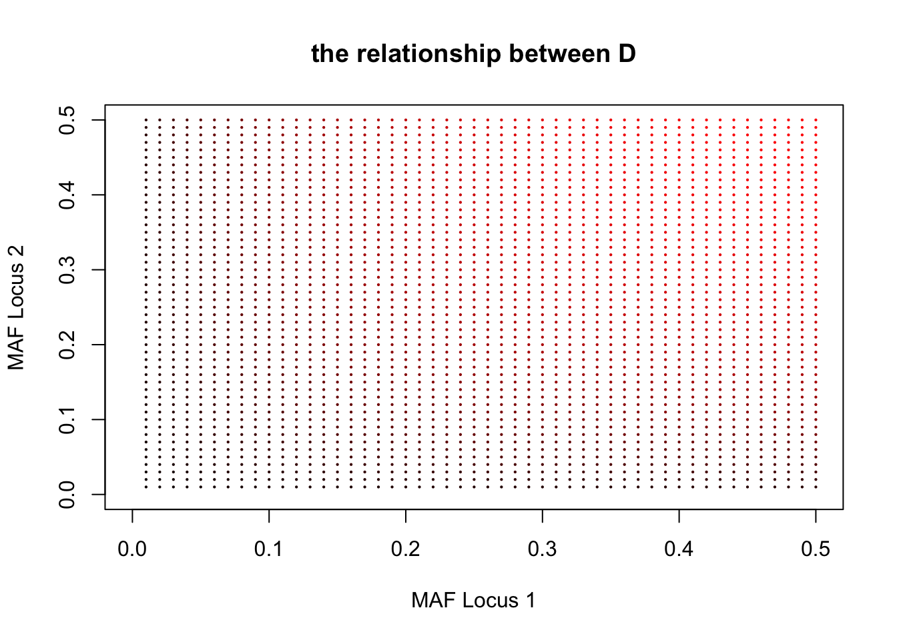

Chapter 9 Appendix 1
9.1 Notes on linkage disequilibrium
For the haplotypes, as tabulated below, consisting of locus 1, which has alleles \(A\) and \(a\), and locus 2, which has alleles \(B\) and \(b\),
| \(B\) | \(b\) | ||
|---|---|---|---|
| \(A\) | \(P_{AB}=P_A \times P_B + D\) | \(P_{Ab}=P_A \times P_b - D\) | \(P_A\) |
| \(a\) | \(P_{aB}=P_a \times P_B - D\) | \(P_{ab}=P_a \times P_b + D\) | \(P_a\) |
| \(P_B\) | \(P_b\) |
It is a typical \(2\times2\) contingency table, once one of these four cell is fixed, other three are all known. Consequently, we can implement Fisher’s Exact test for this table. However, given the current biotechnology, \(D\) is often unknown. But given the correlation, \(\rho_{1,2}\), of a pair of markers, we know that \[\rho_{1,2}=\frac{D_{1,2}}{\sqrt{P_AP_aP_BP_b}}\]
In simulation, it is very easy to simulate LD given the correlation.
Calculate \(D_{1,2}=\rho_{1,2}\sqrt{P_AP_aP_BP_b}\) first.
Depending on the allele at locus 1, the probabilities of observing allele \(B\) and \(b\) are \(P(B|A)=\frac{P_{AB}}{P_{A}} =\frac{P_A\times P_B+D}{P_A}\), \(P(b|A)=1-P(B|A)\), \(P(b|a)=\frac{P_{ab}}{P_a} =\frac{P_a\times P_b+D}{P_a}\), and \(P(B|a)=1-P(B|a)\), respectively. So, the recombination can be defined as \(\frac{P(B|A)}{P(B|A) + P(b|A)}=P_B + \frac{D}{P_A}\).
9.2 The maximal value \(\rho_{AB}\)
Assuming \(P_A \leq P_B \leq 0.5\), the maximal of \(\rho_{l_1l_2}\) reaches when allele \(A\) is \(a\) subset of \(B\) linage so that \(P_{AB}=P_{A}\), because (see PLoS Genet 2(9): e142) \[\rho_{1,2}=\frac{P_{AB}-P_{A}P_{B}}{\sqrt{P_A P_a P_B P_b}}=\frac{P_A(1-P_B)}{\sqrt{P_A P_a P_B P_b}}=\sqrt{\frac{P_AP_b}{P_B P_a}} \leq 1\]
9.3 LD and recombination fraction
It is sometimes useful to simulate \(F_2\) population given known LD between any pair of markers. Below is the procedure for doing that.
For a pair of loci, the correlation is the function of their recombination function \[\rho_{1,2}=1-2c_{1,2}\]
In addition, the correlation is also the function of LD \[\rho_{1,2}=\frac{D_{1,2}}{\sqrt{P_AP_aP_BP_b}}\]
So given the allele frequency of 0.5 and the markers are evenly distributed, \(c_{1,2}=0.5-2D_{1,2}\), and their corresponding genetic distance is \(d_{1,2}=-\frac{1}{2}ln(1-2c_{1,2})=-\frac{1}{2}ln(4D_{1,2})\)
given Haldane map function.
Under the Haldane map function, the recombination between locus 1 and 3 is \(c_{1,3}=\frac{1}{2}[1-e^{-2(d_{1,2}+d_{2,3})}]=\frac{1}{2}[1-e^{2ln(4D_{1,2})}]\) Then the correlation between the locus 1 and 3 is \(\rho_{1,3}=1-2c_{1,3}=e^{2ln(4D_{1,2})}\) And, their corresponding LD is \(D_{1,3}=\sqrt{P_AP_aP_BP_b}e^{ln(4D_{l_1l_2})}=0.25e^{2ln(4D_{l_1l_2})}\)
In general, \(D_{l_il_j}=0.25e^{|l_i-l_j|}ln(4D_{l_1l_2})\).
A = seq(0.01, 0.5, 0.01)
B = seq(0.01, 0.5, 0.01)
C = 0.8
M = matrix(0, length(A), length(B))
plot(x = NULL, y = NULL, xlim = c(0, 0.5), ylim = c(0, 0.5), xlab = "MAF Locus 1",
ylab = "MAF Locus 2", main = "the relationship between D")
for (i in 1:length(A)) {
for (j in 1:length(B)) {
M[i, j] = C * sqrt(A[i] * (1 - A[i]) * B[j] * (1 - B[j]))
points(A[i], B[j], col = rgb(M[i, j]/0.2, green = 0, blue = 0), pch = 16,
cex = 0.3)
}
}